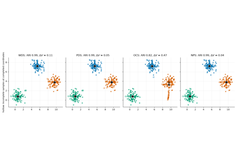
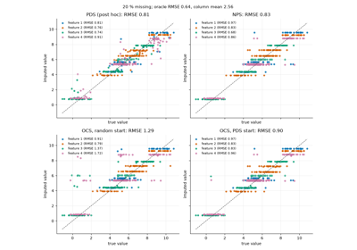
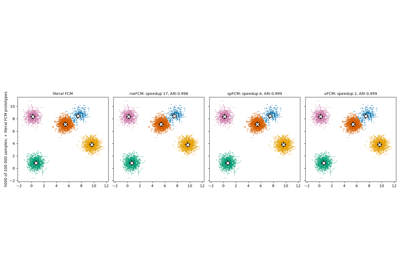
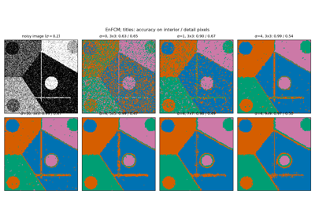

Incomplete, very large and image data#
Fuzzy c-means meets three realities of data that the textbook setting
leaves out. Values are missing: the four strategies of Hathaway and
Bezdek (whole data, partial distances, optimal completion, nearest
prototype) are compared across missingness rates, and the imputation that
optimal completion delivers is examined. Data are very large or arrive
as a stream: random sample and extend, single-pass and online FCM are
compared with the literal FCM on 200 000 points in time and agreement, and
a drifting stream is processed chunk by chunk with partial_fit. The
data are an image: spatially constrained variants (FCM_S, FCM_S1/S2,
EnFCM, FGFCM, FLICM) are compared with pixel-wise FCM under increasing
Gaussian and salt-and-pepper noise, and the neighborhood weight and window
size are studied.

Clustering incomplete data: the four strategies of Hathaway and Bezdek

Imputation by clustering: accuracy of the completed values

Fuzzy c-means for very large data: rseFCM, spFCM and oFCM

Clustering a drifting stream chunk by chunk with partial_fit

Image segmentation under noise: six spatially constrained FCM variants

Spatial FCM: the neighborhood weight and the window size